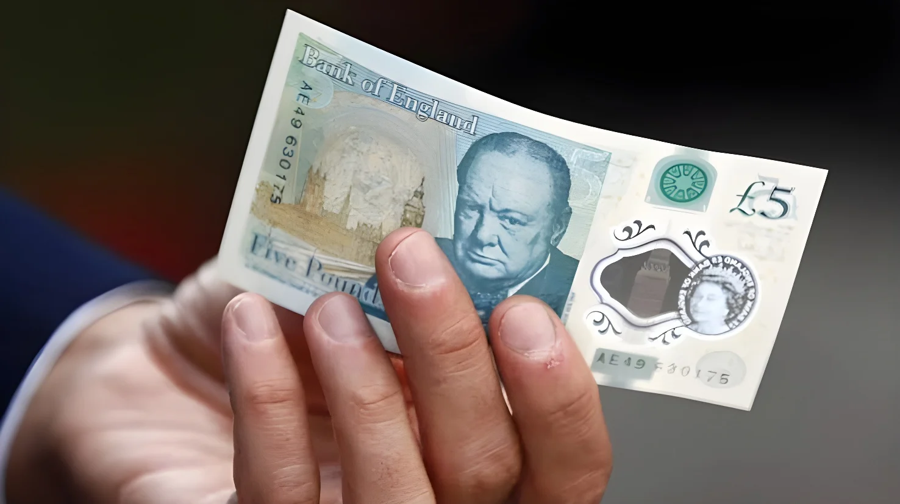

Le 8 octobre 2026, la Banque d'Angleterre a dévoilé les quatre animaux qui figureront sur sa prochaine série de billets : le macareux moine, la chouette effraie, le bourdon terrestre et le hérisson européen, choisis parmi 18 candidats par près de 480 000 répondants. Ils remplaceront à terme Winston Churchill, Jane Austen, J. M. W. Turner et Alan Turing, ce qui a déclenché une polémique sur « l'effacement de l'histoire ». La Banque met en avant la lutte contre la contrefaçon, et le portrait du monarque restera sur toutes les coupures.
Le jeudi 8 octobre 2026, la Banque d'Angleterre a annoncé que le macareux moine, la chouette effraie, le bourdon terrestre et le hérisson européen seront les images centrales de sa prochaine série de billets, à raison d'un animal par coupure. Chacun a été retenu parce qu'il était le plus populaire dans sa catégorie. Le macareux a été ajouté comme représentant du monde marin : la Banque estime qu'un animal marin apporte de la variété, aide à distinguer les coupures entre elles et permet de célébrer le littoral.
Quel animal ira sur quel billet n'est pas encore décidé : l'attribution sera annoncée plus près du lancement. D'autres éléments de la nature, peut-être d'autres animaux de la liste, compléteront les dessins, et le portrait du monarque restera. La conception, les essais et l'impression prennent plusieurs années ; la première coupure est attendue dans les années qui viennent. Rhys Phillips, qui deviendra caissier en chef le 19 octobre 2026, assure que les billets seront « sûrs et représenteront le Royaume-Uni sous son meilleur jour ».
| Animal retenu | Nominations |
|---|---|
| Bourdon terrestre (insectes, poissons) | 360 399 |
| Chouette effraie (oiseaux) | 270 596 |
| Hérisson européen (mammifères) | 259 665 |
| Macareux moine (animaux marins) | 183 137 |
La consultation s'est déroulée du 3 juin au 3 juillet 2026 et a recueilli 478 531 réponses, le plus grand nombre jamais obtenu par la Banque sur l'imagerie de ses billets. Les participants ont effectué 2 549 003 sélections parmi 18 animaux présélectionnés avec l'aide d'un panel de spécialistes de la faune, dont Gordon Buchanan, Miranda Krestovnikoff et Nadeem Perera. Le macareux a été retenu comme meilleur candidat marin alors qu'il avait reçu moins de nominations que le renard roux et le martin-pêcheur, afin que la faune du littoral soit représentée.
Le choix du thème remonte à une première consultation, en juillet 2025, qui avait reçu plus de 44 000 réponses : la nature y recueillait 60 % de soutien, devant l'architecture et les monuments (56 %), les personnages historiques (38 %), les arts, la culture et le sport (30 %), l'innovation (23 %) et les grandes dates (19 %). Les groupes de discussion l'avaient aussi jugée la plus positive. Le 11 mars 2026, la Banque a annoncé le thème de la faune britannique, avec des espèces indigènes et pas des animaux domestiques. Sa caissière en chef, Victoria Cleland, a expliqué que le moteur d'une nouvelle série est toujours d'accroître la résistance à la contrefaçon.
Rhys Phillips succède à Victoria Cleland comme caissier en chef.
Annonce des quatre animaux retenus.
Consultation publique : 478 531 réponses.
La Banque annonce le thème de la faune britannique.
Première consultation sur les thèmes : plus de 44 000 réponses.
Dernière coupure de la série actuelle, le billet de 50 livres.
Premier billet de la série actuelle : 5 livres.
La série actuelle, dite « G », comprend quatre figures historiques : Winston Churchill sur le billet de 5 livres, en polymère depuis septembre 2016, Jane Austen sur celui de 10 livres, J. M. W. Turner sur celui de 20 livres et Alan Turing sur celui de 50 livres. Les personnages historiques figurent sur les billets de la Banque depuis 1970. Les animaux les remplaceront à terme ; l'ordre des remplacements n'a pas été précisé, et le portrait du monarque restera sur chaque billet.
« La nature est un excellent choix du point de vue de l'authentification des billets. »
— Victoria Cleland, caissière en chef de la Banque d'Angleterre, mars 2026 (traduction)L'annonce a provoqué des réactions politiques vives. La cheffe du Parti conservateur, Kemi Badenoch, a dénoncé une façon d'« effacer notre histoire » ; le porte-parole de Reform UK pour le Trésor, Robert Jenrick, a parlé d'une « blague », et le fondateur de la Free Speech Union, Toby Young, a ironisé sur ces images. Une voix tranche : la petite-fille de Churchill, Emma Soames, a dit qu'elle n'avait jamais pensé que l'image de son grand-père resterait indéfiniment sur le billet de 5 livres. La Banque répond que le changement reflète la consultation publique et offre des avantages de sécurité. La RSPCA, qui plaidait pour les animaux « les moins aimés », comme les pigeons, les goélands ou les rats, n'a obtenu aucune place sur la liste finale.
Les membres du panel de spécialistes ont salué le choix. Gordon Buchanan a déclaré que « la nature est bien plus qu'un décor : c'est le fil vivant qui relie nos paysages, notre histoire et notre avenir ». Nadeem Perera a jugé que lui donner une place sur « quelque chose d'aussi symbolique que notre monnaie » semblait « à la fois attendu depuis longtemps et important ». Victoria Cleland ajoute que les animaux choisis « renforceront aussi la sécurité de nos billets ».
La Banque insiste sur l'argument technique : les images de faune permettent des éléments de sécurité faciles à reconnaître par le public et difficiles à imiter. Victoria Cleland y voit aussi la preuve que « la monnaie fiduciaire compte encore » : environ une personne sur sept préfère payer en espèces, même si moins de 10 % des paiements ont été faits en liquide en 2024, selon UK Finance. La série G a été émise entre septembre 2016 et juin 2021 ; la suivante est attendue dans plusieurs années.
| Billets à la nature, en Europe | Motif |
|---|---|
| Écosse | Loutres, écureuils roux |
| Norvège (couronne) | La mer |
| Suisse | Papillons, Alpes |
| Zone euro | Oiseaux et rivières à l'étude (BCE) |
Remplacer des visages par des bourdons, c'est choisir un symbole qui ne divise personne, ce qu'aucun personnage historique, même consensuel, ne peut garantir. La Banque y gagne une image plus sûre pour la sécurité des billets et un thème choisi par le public, mais elle y perd la fonction commémorative qui faisait de la monnaie une galerie de portraits nationaux.
La polémique montre que le billet reste un objet politique : en 2026, alors que les paiements numériques progressent, des responsables y voient encore l'enjeu d'une identité nationale. Le contraste entre la faible part du liquide et l'ampleur du débat suggère que, moins on paie en espèces, plus ce que l'on y imprime pèse symboliquement.
On October 8, 2026, the Bank of England unveiled the four animals that will appear on its next series of banknotes: the Atlantic puffin, barn owl, buff-tailed bumblebee and European hedgehog, chosen from 18 candidates by nearly 480,000 respondents. They will eventually replace Winston Churchill, Jane Austen, J. M. W. Turner and Alan Turing, triggering a row over 'erasing history'. The Bank stresses counterfeit resistance, and the monarch's portrait will stay on every note.
On Thursday, October 8, 2026, the Bank of England announced that the Atlantic puffin, barn owl, buff-tailed bumblebee and European hedgehog will be the central images of its next banknote series, one animal per denomination. Each was chosen as the most popular in its category. The puffin was added to represent the marine world: the Bank says a marine animal adds variety, helps tell the denominations apart and celebrates the coastline.
Which animal goes on which note has not been decided: the assignment will be announced closer to launch. Other elements of nature, perhaps other animals from the shortlist, will complete the designs, and the monarch's portrait will remain. Designing, testing and printing take several years; the first denomination is expected in the next few years. Rhys Phillips, who becomes Chief Cashier on October 19, 2026, says the notes will be "secure and represent the UK at its best."
| Chosen animal | Nominations |
|---|---|
| Buff-tailed bumblebee (insects, fish) | 360,399 |
| Barn owl (birds) | 270,596 |
| European hedgehog (mammals) | 259,665 |
| Atlantic puffin (marine animals) | 183,137 |
The consultation ran from June 3 to July 3, 2026 and drew 478,531 responses, the most the Bank has ever received on banknote imagery. Participants made 2,549,003 selections among 18 animals shortlisted with the help of a panel of wildlife experts, including Gordon Buchanan, Miranda Krestovnikoff and Nadeem Perera. The puffin was picked as the top marine candidate even though it received fewer nominations than the red fox and the common kingfisher, so that coastal wildlife would be represented.
The theme goes back to a first consultation in July 2025 that received more than 44,000 responses: nature won 60% support, ahead of architecture and landmarks (56%), notable historical figures (38%), arts, culture and sport (30%), innovation (23%) and milestones (19%). Focus groups also found it the most positive. On March 11, 2026, the Bank announced the British wildlife theme, with native species rather than household pets. Chief Cashier Victoria Cleland explained that the key driver of a new series is always to increase counterfeit resilience.
Rhys Phillips succeeds Victoria Cleland as Chief Cashier.
The four chosen animals are announced.
Public consultation: 478,531 responses.
The Bank announces the British wildlife theme.
First consultation on themes: more than 44,000 responses.
Last note of the current series, the £50.
First note of the current series: the £5.
The current "G" series features four historical figures: Winston Churchill on the £5 note, in polymer since September 2016, Jane Austen on the £10, J. M. W. Turner on the £20 and Alan Turing on the £50. Historical figures have appeared on the Bank's notes since 1970. The animals will eventually replace them; the order of replacement has not been specified, and the monarch's portrait will remain on every note.
"Nature is a great choice from a banknote authentication perspective."
— Victoria Cleland, Chief Cashier of the Bank of England, March 2026The announcement provoked sharp political reactions. Conservative leader Kemi Badenoch denounced a way of "erasing our history"; Reform UK's Treasury spokesman Robert Jenrick called it a "joke," and Free Speech Union founder Toby Young mocked the imagery. One voice cut across: Churchill's granddaughter, Emma Soames, said she had never expected her grandfather's image to stay on the £5 note indefinitely. The Bank replies that the change reflects the public consultation and offers security benefits. The RSPCA, which had argued for "least-loved" animals such as pigeons, gulls and rats, got no place on the final list.
Members of the expert panel welcomed the choice. Gordon Buchanan said that "nature is more than just scenery, it is the living thread that binds our landscapes, our history, and our future together." Nadeem Perera felt that giving it space on "something as symbolic as our currency" seemed "both overdue and significant." Victoria Cleland adds that the chosen animals "will also enhance the security of our banknotes."
The Bank insists on the technical argument: wildlife images allow security features that are easy for the public to recognise and hard to copy. Victoria Cleland also sees in the response proof that cash "continues to matter": about one person in seven prefers to pay in cash, even though fewer than 10% of payments were made in cash in 2024, according to UK Finance. The G series was issued between September 2016 and June 2021; the next one is expected in several years.
| Nature on banknotes in Europe | Motif |
|---|---|
| Scotland | Otters, red squirrels |
| Norway (krone) | The sea |
| Switzerland | Butterflies, the Alps |
| Eurozone | Birds and rivers under study (ECB) |
Replacing faces with bumblebees means choosing a symbol that divides no one, something no historical figure, however consensual, can guarantee. The Bank gains a safer image for note security and a theme chosen by the public, but loses the commemorative function that made money a gallery of national portraits.
The row shows that the banknote remains a political object: in 2026, as digital payments grow, politicians still see national identity at stake. The contrast between the small share of cash and the size of the debate suggests that the less we pay in cash, the more what is printed on it weighs symbolically.